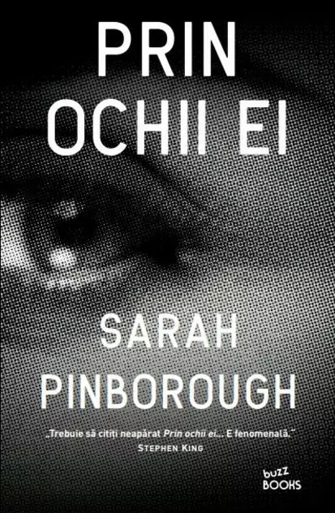

Cărți care iți vor lăsa amprenta pe suflet
Cu siguranță există o mulțime de cărți a căror poveste iți vor marca existența,
iar mai jos este prezentat un număr infim de opere din multitudinea existentă.
Războiul care mi-a salvat viața
Autor: Kimberly Brubaker Bradley
Într-o lume nesigură, pe fundalul luptei pentru supraviețuire din întunecații ani
ai celui de‑al doilea război mondial, Ada, o fetiță de noua ani, are de purtat propria ei bătălie pentru a demonstra că nu e cu nimic diferită de ceilalți.
Umilită de propria mamă din cauza unui defect fizic, ținută captivă în apartamentul lor cu o singură cameră,
Ada profită de faptul că toți copiii sunt evacuați din Londra și, împreună cu fratele ei, Jamie,
fuge departe de răutatea mamei. Așa ajung să o cunoască pe Susan Smith, o femeie posacă,
dar care îi iubește ca și cum ar fi copiii ei. Și, în timp ce lumea întreaga se schimbă și toți cei din jur
cunosc suferința și despărțirea, Ada descoperă ce înseamnă iubirea și respectul.
Băiatul cu pijamale în dungi
Autor: John Boyne
Aceasta este povestea unui băiețel german pe nume Bruno,
al cărui tată a primit o slujbă foarte importantă, ceea ce înseamnă că toată familia trebuie să se mute departe de oraș, într‑un loc ciudat,
unde casa lor e singura locuință adevărată și unde, în spatele unor garduri nesfârșite, se află sute,
poate mii de oameni îmbrăcați în pijamale în dungi. Bruno se străduiește să înțeleagă ce se întâmplă în jurul său.
Pornește așadar să exploreze împrejurimile și zărește un punct, care devine o pată și o pată care devine un băiat.
Fata de pe peron
Autor: Samantha M. Bailey
Viața lui Morgan Kincaid se schimbă datorită unui moment fatidic.
Pe când se întorcea acasă de la serviciu, o femeie o roagă să îi țină bebelușul și,
înainte ca Morgan să poată să o oprească, aceasta se aruncă în fața unui tren. Morgan nu are idee cine era femeia
și nu poate să înțeleagă ce anume o mânase către un gest atât de disperat. Dar, mai ales, Morgan nu știe de ce femeia
i‑a spus pe nume. Atunci când poliția o ia ca să îi pună câteva întrebări, Morgan află că numele femeii era Nicole Markham
și că ocupa funcția de CEO la compania de produse sport Breathe. Din păcate, nu există martori care să ateste povestea lui
Morgan, și astfel ea devine principala suspectă. Ca să își demonstreze inocența, Morgan încearcă să investigheze ultimele
zile ale lui Nicole, fără să își dea seama că este ea însăși în pericol.
Fata din tren
Autor: Paula Hawkins
Tu nu o cunoști. Dar ea te cunoaște.
Rachel merge în fiecare dimineață cu același tren, așteptând la același semnal defect. În acest timp, ea urmărește ritualul de dimineață al unui cuplu ce locuiește
într‑o casă de lângă calea ferată. I‑a botezat „Jess și Jason“ și viața lor i se pare perfectă. Până când într‑o zi
vede ceva ce o șochează. Totul se schimbă și Rachel are șansa de a lua parte la viețile pe care le-a observat doar de pe margine.
Prin ochii ei
Autor: Sarah Pinborough
Louise este o mamă singură, secretară, prinsă în rutina de zi cu zi.
Într‑una din serile ei in oraș, întâlnește un bărbat într‑un bar și imediat ies scântei.
Deși pleacă după ce se sărută, e încântată că în cele din urmă a creat o legătură cu cineva.
Când ajunge la serviciu luni, Louise îl întâlnește pe noul ei șef, David, bărbatul de la bar.
Bărbatul căsătorit de la bar, care îi spune că sărutul a fost o greșeală teribilă, dar înca nu‑și poate lua ochii de la ea.
Apoi, Louise se ciocnește de Adele, care este nouă în oraș și are nevoie de o prietenă.
Dar se întamplă ca tocmai ea să fie căsătorită cu David.Prin ochii ei este o poveste inedită și care, probabil,
nu seamănă cu nici o altă carte pe care ați citit‑o până acum.
Soția tăcută
Autor: A.S.A. Harrison
Jodi și Todd se află într‑un moment de cumpănă al relației lor.
Totul e în pericol, inclusiv viața prosperă pe care o duc în locuința lor din Chicago.
Chiar dacă nu sunt căsătoriți, sunt împreună de peste douăzeci de ani. El este un antreprenor bogat, iar ea, psihoterapeută.
Romanul este un thriller psihologic despre căsnicie și crimă, rutină și nevoia de nou, despre disoluția unei relații,
relatat alternativ din perspectiva celor două personaje principale.
Acolo unde cântă racii
Autor: Delia Owens
Zvonurile despre "fata mlaștinii" au circulat mulți ani în Barkley Cove,
un orășel liniștit de pe coasta Carolinei de Nord. În 1969, când Chase Andrews este găsit mort,
localnicii bănuiesc imediat că a fost ucis de Kya Clark, adevăratul nume al "fetei mlaștinii". Însă Kya nu este nici pe departe
sălbăticiunea pe care și-o închipuie lumea. Sensibilă și inteligentă, a supraviețuit singură în mlaștinile cu vegetație
luxuriantă de pe malul oceanului, împrietenindu‑se cu pescărușii, descoperind bogăția nesfârșită a pădurilor brăzdate de
canale și învățând lecții de viață accesibile doar celor care trăiesc în natură. Într-o bună zi, Kya simte înfiripându-se
în sufletul ei dorința de a fi iubită, iar când doi tineri din oraș sunt atrași de frumusețea ei neobișnuită, viața i se schimbă
complet, căpătând un alt sens. Dar, nu după mult timp, ceva cu totul neprevăzut îi sfărâmă noua existență.